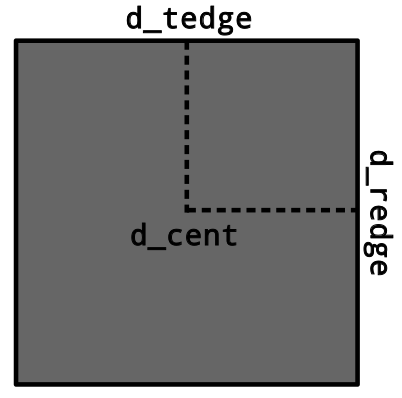
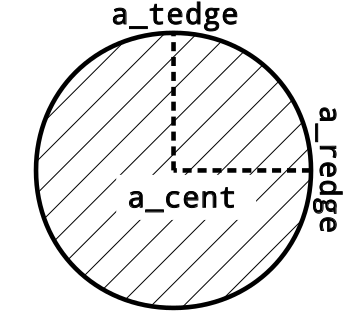
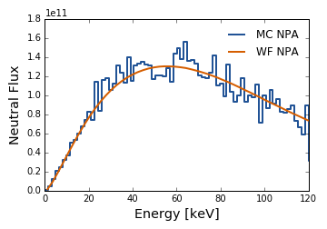

 
An NPA detector is defined by an aperture for which neutral particles must pass through and an detector. The aperture/detectors are defined by three points and a shape as shown in the figures above. It is assumed that between the aperture and the detector that particles travel in straight lines i.e. there is no stripping foil at the aperture.
The full definition of the NPA detector is given below (right and left as implied by looking through the aperture at the detector)
| Variable | Type | Rank | Dimensions | Units | Description |
|---|---|---|---|---|---|
nchan |
Int32 | 0 | NA | NA | Number of channels |
system |
String | 0 | NA | NA | Name of the NPA system(s) |
data_source |
String | 0 | NA | NA | Source of the NPA geometry data |
id |
String | 1 | [nchan] |
NA | Channel ID |
radius |
Float64 | 1 | [nchan] |
cm | Line of sight radius at midplane or tangency point |
a_shape |
Int16 | 1 | [nchan] |
NA | Shape of the aperture (1=rect, 2=circ) |
d_shape |
Int16 | 1 | [nchan] |
NA | Shape of the detector (1=rect, 2=circ) |
a_cent |
Float64 | 2 | [3,nchan] |
cm | Position of the center of the aperture |
a_redge |
Float64 | 2 | [3,nchan] |
cm | Position of the apertures right edge |
a_tedge |
Float64 | 2 | [3,nchan] |
cm | Position of the apertures top edge |
d_cent |
Float64 | 2 | [3,nchan] |
cm | Position of the center of the detector |
d_redge |
Float64 | 2 | [3,nchan] |
cm | Position of the detectors right edge |
d_tedge |
Float64 | 2 | [3,nchan] |
cm | Position of the detectors top edge |
The Monte Carlo method of calculating the NPA flux (MC-NPA) is as follows
The Monte Carlo NPA calculation assumes that the second order gyro-correction is small and the gyro-ring is circular. This assumption is often safe to make in conventional tokamaks but it may cause problems in spherical tokamaks or at the plasma edge where the torodial magnetic field is small. In these cases the alternative approach (detailed below) is suggested.
An alternative approach is to fire the particles directly at the NPA detector and then scale the resultant flux by the probability of that trajectory occuring. This approach is taken in the weight function method (WF-NPA) detailed here.
An example of the calculated NPA flux for the two different methods are shown below.

n_npa: Number of Monte Carlo particles used in MC-NPA calculationn_pnpa: Number of Monte Carlo particles used in passive MC-NPA calculationcalc_npa: Calculate NPA flux using the Monte Carlo Methodcalc_npa_wght: Calculate NPA weight function and flux using the weight function methodne_wght: Number of energies in weight function calculationnp_wght: Number of pitches in weight function calculationemax_wght: Maximum energy in weight function calculation